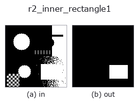

region op• 데이터 종류: region → region
• 호출: fullseye.apply(img, "r2_inner_rectangle1", a=0.5, b=0.5)(2-D 는 이미지 1 장 + 스칼라 노브 2 개 a,b∈[0,1] 모델)
• HALCON 대응: inner_rectangle1(의미·매개변수는 HALCON 레퍼런스가 참고가 됩니다)

*그림은 128×128 합성 입력에서 실제로 실행한 출력. 왼쪽이 입력, 오른쪽이 출력. 점군은 위에서 본 산점도(밝기 = z), 1-D 열은 꺾은선, 볼륨은 z 방향 최대값 투영, 동영상은 가운데 프레임, 복소 영상은 진폭이며, 그림이 되지 않는 반환값은 값 자체를 표시한다.*
노브 a 를 훑기(0.1 / 0.5 / 0.9, 다른 노브는 기본값):
▸ r2_inner_rectangle1: 노브 a 스윕 (문서 사이트)
*노브 b 는 출력을 바꾸지 않는다(실측: 0.1 / 0.5 / 0.9에서 동일).*
단계(앞에 오는 op → 이 op, 왼쪽에서 오른쪽으로):
▸ r2_inner_rectangle1: 단계 (문서 사이트)
다른 영상에서도(합성 장면 / 사진 / 동전. 윗줄이 입력, 아랫줄이 그 출력. 노브는 기본값):
▸ r2_inner_rectangle1: 다른 입력 이미지 (문서 사이트)
최대 축 평행 내접 사각형(a 가 그리는 사각형을 줄임. a=0 이면 정확).
영역에 내접하는 축 평행 직사각형 중 면적이 최대인 것을 마스크로 그린다. 전경 마스크(> 0.5)에 대해 행마다 각 열의 연속 전경 높이를 쌓고, 단조 스택으로 최대직사각형을 구하는 히스토그램법(O(H*W))으로 엄밀해를 얻는다. 같은 면적의 후보가 여럿있을 때는 주사 순서로 처음 발견된 것을 채택한다.
a는 그릴 직사각형을 안쪽으로 줄이는 비율로, f = 0.3*a로 하여 높이를 round(hh*f/2) 행씩, 폭을 round(ww*f/2) 열씩 양쪽에서 깎는다. a=0에서엄밀한 최대 내접 직사각형, a=1에서 각 변이 약 15%씩 줄어든다(면적으로는 약 절반). 너무 줄여 변이 뭉개지는 경우에는 중앙의 1행 / 1열로 반올림한다. b는 사용하지 않는다.
반환값은 입력과 같은 형태의 float64 0/1 마스크. 전경이 없으면 전부 0. 직사각형은 화소 경계에맞춰지므로 a=0의 출력은 반드시 영역에 포함된다(r2_inner_circle과 달리벗어나지 않는다). 구멍이 있는 영역에서는 구멍을 피한 직사각형이 되므로, 구멍을 무시하고 싶을때는 전단에 fill_up. 회전한 직사각형은 다룰 수 없다(축 평행만). 외접 쪽의축 평행 직사각형은 r2_smallest_rectangle1.
• 샘플 데이터 카탈로그(DL URL / 라이선스) —— 2-D 는 skimage.data(BSD/public)+ 합성, 3-D 는 실데이터 소스(Stanford/PDS 등)의 DL URL.
• 연산자의 내력·참고문헌 —— 이 연산자 족의 바탕이 된 연구/기법의 출처.
• 알고리즘의 정전(저자·연도)과 용도는 위의 패밀리 사용 가이드에 적혀 있습니다.
아래 프로그램은 실제로 실행됨을 확인했습니다(그림과 같은 입력). Studio 도움말에서는 이 블록이 버튼이 되어 즉시 불러와 실행할 수 있습니다.
threshold 0.50 0.50 r2_inner_rectangle1 0.50 0.50
• gallery2d_region — py -3.11 examples/gallery2d_region.py
region 를 입력으로 받는 것)identity · reg_erode · reg_dilate · reg_open · reg_close · fill_holes · select_largest · remove_small
region)reg_erode · reg_dilate · reg_open · reg_close · fill_holes · select_largest · remove_small · invert_region
*Provenance: ops.py — 2D 연산자 레지스트리. 이 op 노트는 tools/opdocs.py md 가 자동 생성합니다(직접 편집하지 마세요).*
© 2026 Kazufumi Furuse — Fullseye operator documentation. Licensed under Apache-2.0.